Giãn Phế Quản
I. Đại cương
– Giãn phế quản (bronchiectasis) là tình trạng giãn bất thường, không hồi phục của một hay nhiều phế quản, thường kèm dày thành phế quản và ứ đọng chất nhầy.
– Dịch tễ:
+ Bệnh gặp ở nhiều lứa tuổi, nhưng thường được ghi nhận ở người lớn tuổi.
+ Phân tích gộp 15 nghiên cứu ở người trưởng thành tại 6 quốc gia ước tính tỷ lệ hiện mắc gộp 680/100.000 người.
– Cơ chế bệnh sinh:
+ Rối loạn thanh thải nhầy–lông chuyển (mucociliary clearance), nhiễm trùng kéo dài hoặc tái diễn, tắc nghẽn và suy giảm miễn dịch có thể khởi phát tổn thương đường thở.
+ Nhiễm trùng và viêm mạn tính, thường ưu thế bạch cầu trung tính, gây tổn thương thành phế quản và giãn không hồi phục. Giãn phế quản lại làm giảm thanh thải dịch tiết, duy trì vòng xoắn bệnh lý.
– Phân bố: Tổn thương có thể khu trú hoặc lan tỏa, thường ưu thế ở thùy dưới, đặc biệt các phân thùy đáy. Thùy giữa và thùy lưỡi có thể ưu thế trong một số kiểu hình; phân bố thay đổi theo căn nguyên.
– Cạm bẫy:
+ Giãn phế quản thoáng qua trong nhiễm trùng cấp có thể hồi phục. Khi chưa xác định tính dai dẳng, nên mô tả là “giãn lòng phế quản” (bronchial dilatation), chưa kết luận giãn phế quản mạn tính.
+ Giãn tiểu phế quản (bronchiolectasis) là giãn các tiểu phế quản, cần phân biệt với giãn các phế quản có sụn.
+ Giãn phế quản do co kéo (traction bronchiectasis) là giãn thứ phát trong bệnh phổi xơ hóa; cần diễn giải trong bối cảnh xơ hóa, không mặc nhiên đồng nhất với giãn phế quản do nguyên nhân khác.
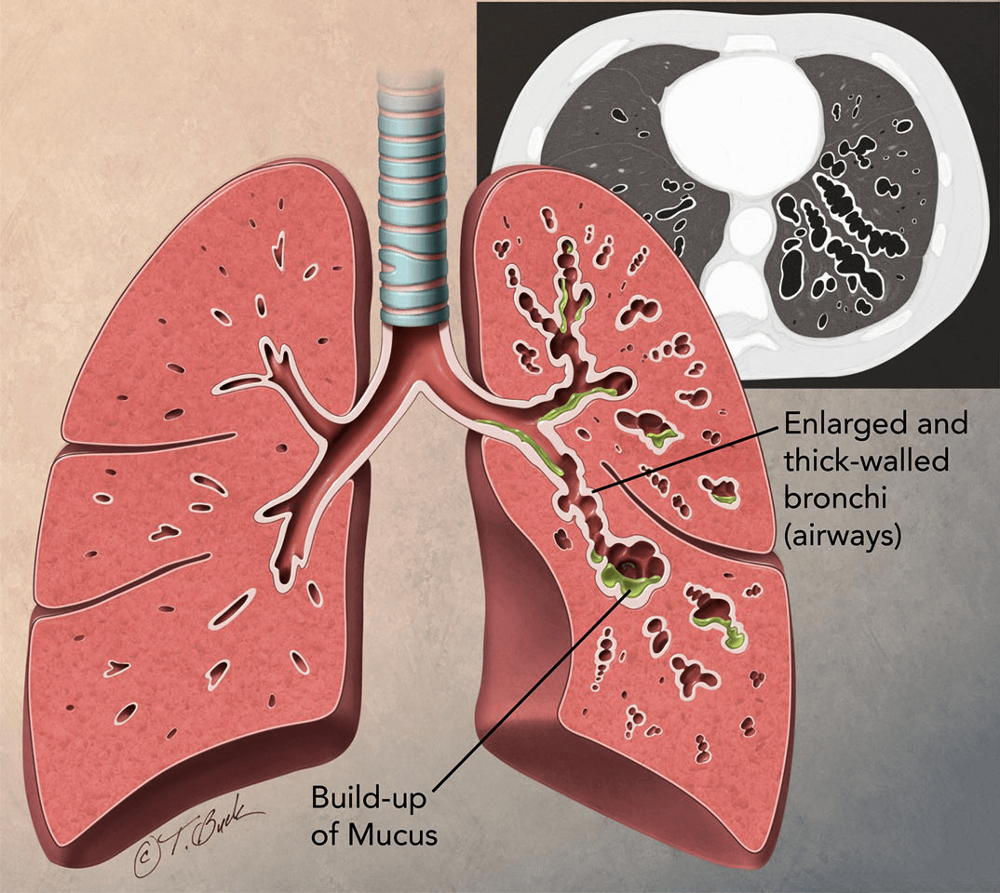
© Chẩn Đoán Hình Ảnh Xray.vn
* Lâm sàng
– Hình thái lâm sàng:
+ Ho mạn tính, khạc đờm mủ; có thể kèm khó thở.
+ Đợt nhiễm trùng có thể gây tăng đờm, sốt, đau ngực; ho ra máu hoặc đờm lẫn máu cũng có thể gặp.
– Biến chứng: Viêm phổi, áp xe phổi và suy hô hấp có thể xảy ra. Bệnh nặng, kéo dài có thể gây tăng áp phổi, tâm phế mạn và suy tim phải. Khí phế thũng có thể đồng mắc nhưng không phải biến chứng trực tiếp.
* Nguyên nhân
– Dị tật bẩm sinh:
+ Hội chứng Kartagener (Kartagener syndrome) là một thể rối loạn vận động lông chuyển nguyên phát, đặc trưng bởi giãn phế quản, viêm xoang mạn và đảo phủ tạng (thường có tim phải). Rối loạn vận động lông chuyển làm giảm thanh thải nhầy–lông chuyển, dẫn đến nhiễm trùng hô hấp tái diễn và giãn phế quản.
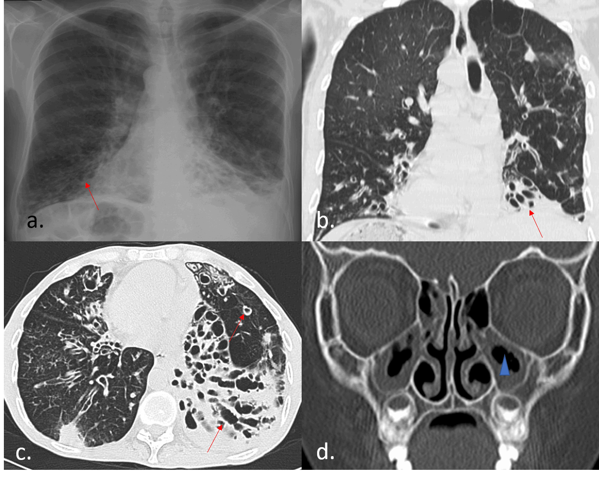
=> Case lâm sàng 1:
+ Hội chứng Williams–Campbell (Williams–Campbell syndrome) do thiểu sản hoặc không có sụn ở các phế quản dưới phân thùy, thường từ thế hệ IV đến VI. Các phế quản giãn khi hít vào và xẹp khi thở ra, làm giảm thanh thải dịch tiết, dẫn đến nhiễm trùng tái diễn và giãn phế quản.
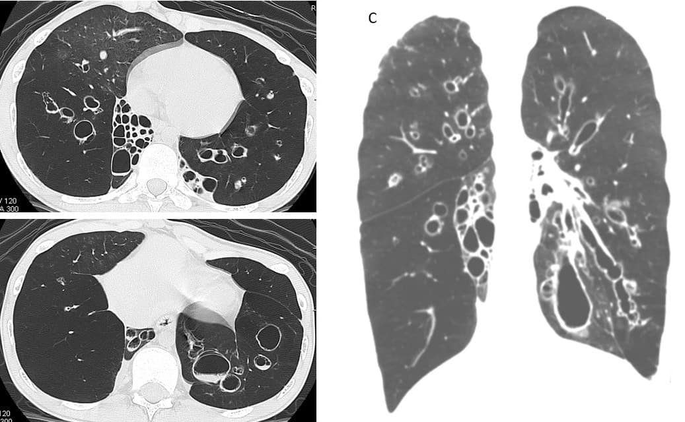
+ Hội chứng Mounier–Kuhn (Mounier–Kuhn syndrome; tracheobronchomegaly) là bệnh hiếm, thường được xem là bẩm sinh nhưng căn nguyên chưa hoàn toàn rõ, gặp chủ yếu ở nam. Teo hoặc thiểu hụt cơ trơn và sợi chun thành khí quản, phế quản chính làm đường thở giãn khi hít vào, hẹp hoặc xẹp khi thở ra; giảm thanh thải dịch tiết dẫn đến nhiễm trùng hô hấp tái diễn, giãn phế quản và có thể hình thành túi thừa. Một bộ tiêu chí CT ở người lớn gồm đường kính khí quản > 30 mm, phế quản chính phải > 24 mm và trái > 23 mm (Li và cs., 2025).
– Giãn phế quản mắc phải:
+ Nhiễm trùng đường hô hấp dưới nặng hoặc tái diễn, như viêm phổi hay viêm phế quản, có thể gây tổn thương thành phế quản và dẫn đến giãn phế quản mắc phải; giãn phế quản lại làm tăng nguy cơ nhiễm trùng tái diễn.
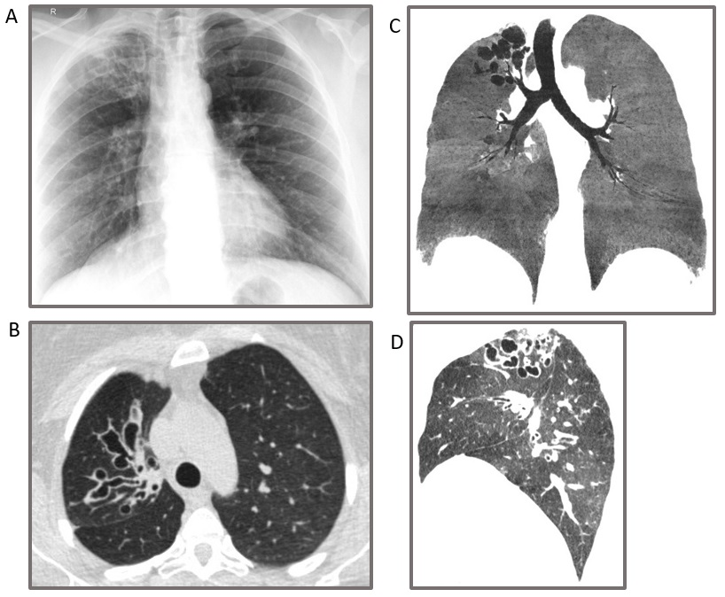
+ Lao phổi, đặc biệt thể xơ hang, có thể gây xơ hóa, co kéo hoặc hẹp phế quản, cản trở dẫn lưu đờm và góp phần hình thành giãn phế quản mắc phải. Tần suất giãn phế quản được báo cáo cao gấp 4 lần ở lao xơ hang so với lao hạt và 11 lần so với lao thâm nhiễm; các tỷ số này phụ thuộc quần thể nghiên cứu.
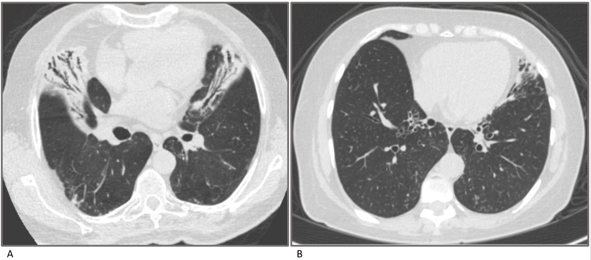
+ Nhiễm trùng virus: Nhiễm trùng đường hô hấp dưới nặng do virus, đặc biệt ở trẻ em như sởi hoặc cúm, có thể gây giãn phế quản sau nhiễm trùng.
+ Ho gà: Nhiễm trùng do vi khuẩn Bordetella pertussis cũng có thể gây giãn phế quản sau nhiễm trùng.
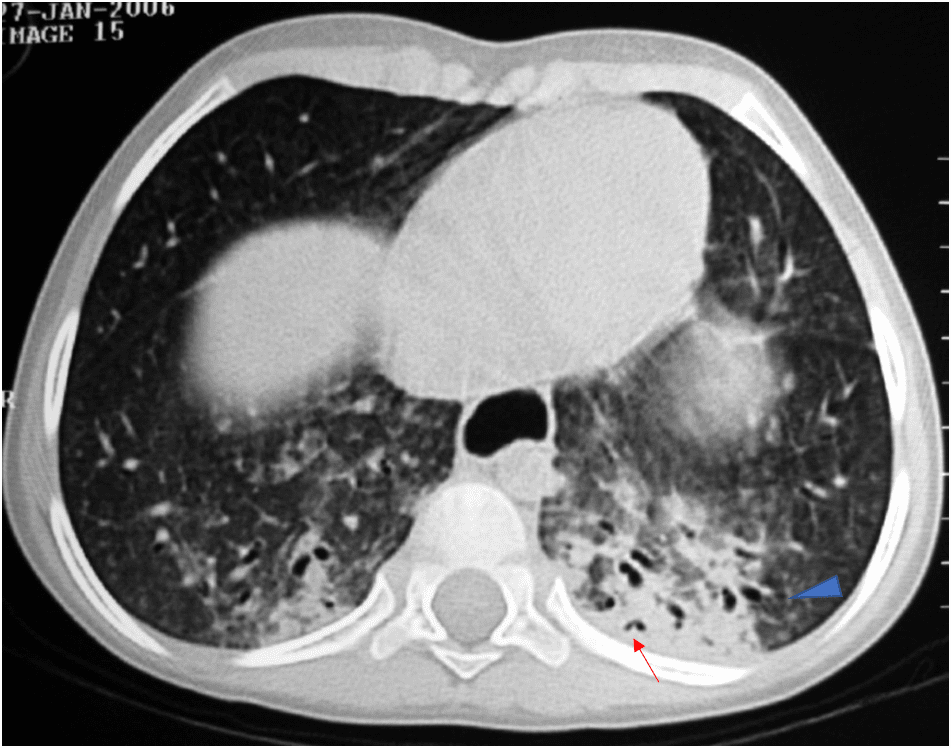
+ Hẹp phế quản: Cản trở thanh thải dịch tiết, gây ứ đọng và nhiễm trùng tái diễn ở vùng phổi phía xa chỗ hẹp; viêm mạn tính có thể làm tổn thương thành phế quản và gây giãn phế quản khu trú.
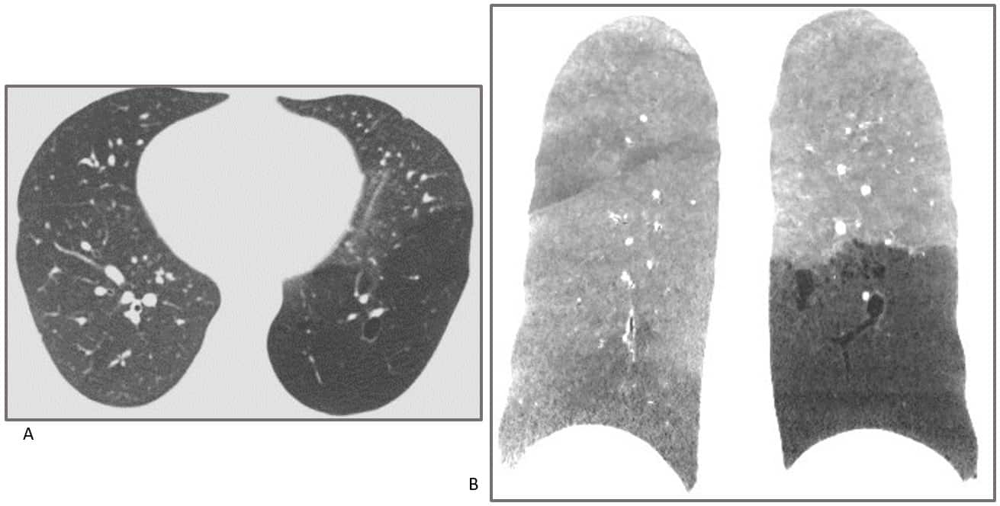
+ Hít phải hóa chất độc hoặc ăn mòn: Tổn thương nặng niêm mạc khí–phế quản có thể gây sẹo hẹp, ứ đọng dịch tiết và nhiễm trùng tái diễn, dẫn đến giãn phế quản thứ phát.
+ Bệnh phổi tắc nghẽn mạn tính (COPD): Có thể đồng mắc với giãn phế quản; cần phân biệt tình trạng đồng mắc/chồng lấp với quan hệ nhân quả trực tiếp.
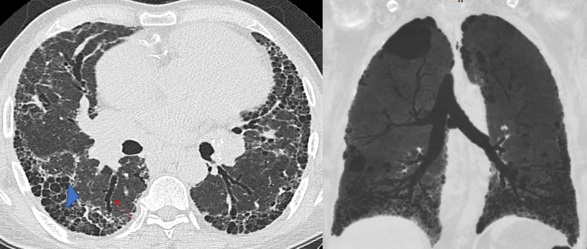
+ Xơ hóa phổi: Xơ hóa nhu mô kéo giãn các phế quản, gây giãn phế quản do co kéo (traction bronchiectasis); đây là biến đổi thứ phát của xơ hóa.
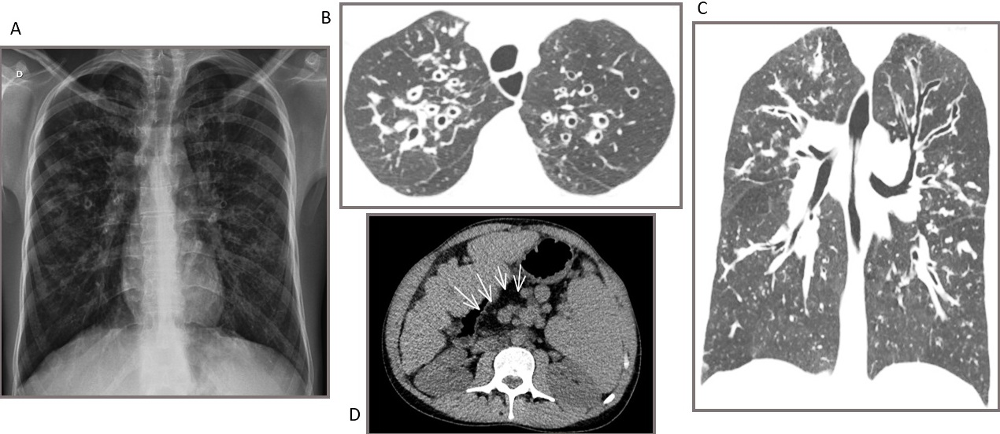
II. Phân loại
1. Phân loại Reid (1950)
– Giãn phế quản hình trụ (cylindrical): lòng phế quản giãn tương đối đồng đều, thành gần song song và mất dần hiện tượng thuôn nhỏ về phía ngoại vi.
– Giãn phế quản hình tràng hạt (varicose): lòng phế quản giãn không đều, xen kẽ các đoạn giãn và hẹp, tạo đường bờ lồi lõm.
– Giãn phế quản dạng nang hoặc hình túi (cystic/saccular): các phế quản giãn thành những túi hoặc nang, thường biểu hiện tổn thương nặng hơn; có thể có mức khí–dịch khi ứ đọng dịch tiết hoặc bội nhiễm.
– Hình thái hỗn hợp: có thể gặp nhiều kiểu hình phối hợp trong cùng bệnh nhân; đây là mô tả sự phối hợp, không phải kiểu hình thứ tư trong phân loại Reid.
2. Phân bố giải phẫu
* Giãn phế quản khu trú: tổn thương giới hạn ở một phân thùy hoặc một thùy phổi.
– Có thể xuất hiện sau nhiễm trùng nặng hoặc hít sặc khu trú.
– Tắc nghẽn trong lòng phế quản do u, dị vật hoặc sỏi phế quản; chèn ép từ ngoài do khối u hoặc hạch to; hẹp phế quản đoạn gần cũng có thể gây giãn các phế quản phía xa.
* Giãn phế quản đa ổ hoặc lan tỏa: tổn thương ảnh hưởng đến nhiều vùng hoặc nhiều thùy phổi. Kiểu phân bố có thể gợi ý căn nguyên nhưng không xác định căn nguyên một cách đặc hiệu.
– Ưu thế trung tâm: thường gặp trong aspergillosis phế quản–phổi dị ứng (ABPA); hội chứng Mounier–Kuhn ảnh hưởng khí quản và các phế quản trung tâm.
– Ưu thế thùy trên: bệnh xơ nang, nhiễm mycobacteria không lao (NTM) và sarcoidosis.
– Ưu thế thùy giữa hoặc thùy lưỡi: thường gặp trong nhiễm NTM và rối loạn vận động lông chuyển nguyên phát (PCD).
– Ưu thế thùy dưới hoặc vùng phổi phụ thuộc: có thể gặp trong hít sặc mạn tính và xơ hóa phổi gây giãn phế quản do co kéo.
– Ưu thế ở các phế quản thế hệ IV–VI: gợi ý hội chứng Williams–Campbell; phế quản trung tâm thường được bảo tồn.
– Phân bố thay đổi hoặc lan tỏa: có thể gặp trong suy giảm miễn dịch, bệnh tự miễn, thiếu hụt alpha-1 antitrypsin, viêm tiểu phế quản tắc nghẽn hoặc di chứng ARDS; các tình trạng này không có một ưu thế phân bố thùy cố định.
III. Chẩn đoán x-quang
– Hình ảnh súng hai nòng (tram-track): thành phế quản dày hiện thành hai dải song song khi phế quản chạy dọc; có thể gặp trong giãn phế quản nhưng không đặc hiệu. Khi quan sát phế quản theo mặt cắt ngang, lòng phế quản giãn lớn hơn động mạch phổi đi kèm có thể tạo dấu hiệu nhẫn (signet-ring sign); dấu hiệu này đánh giá rõ hơn trên CT.
– Tăng đậm rốn phổi và các dải phế quản–mạch máu có thể do dày thành phế quản hoặc mô kẽ quanh phế quản; dấu hiệu không đặc hiệu, cần phân biệt với tăng đậm mạch máu hoặc hạch rốn phổi.
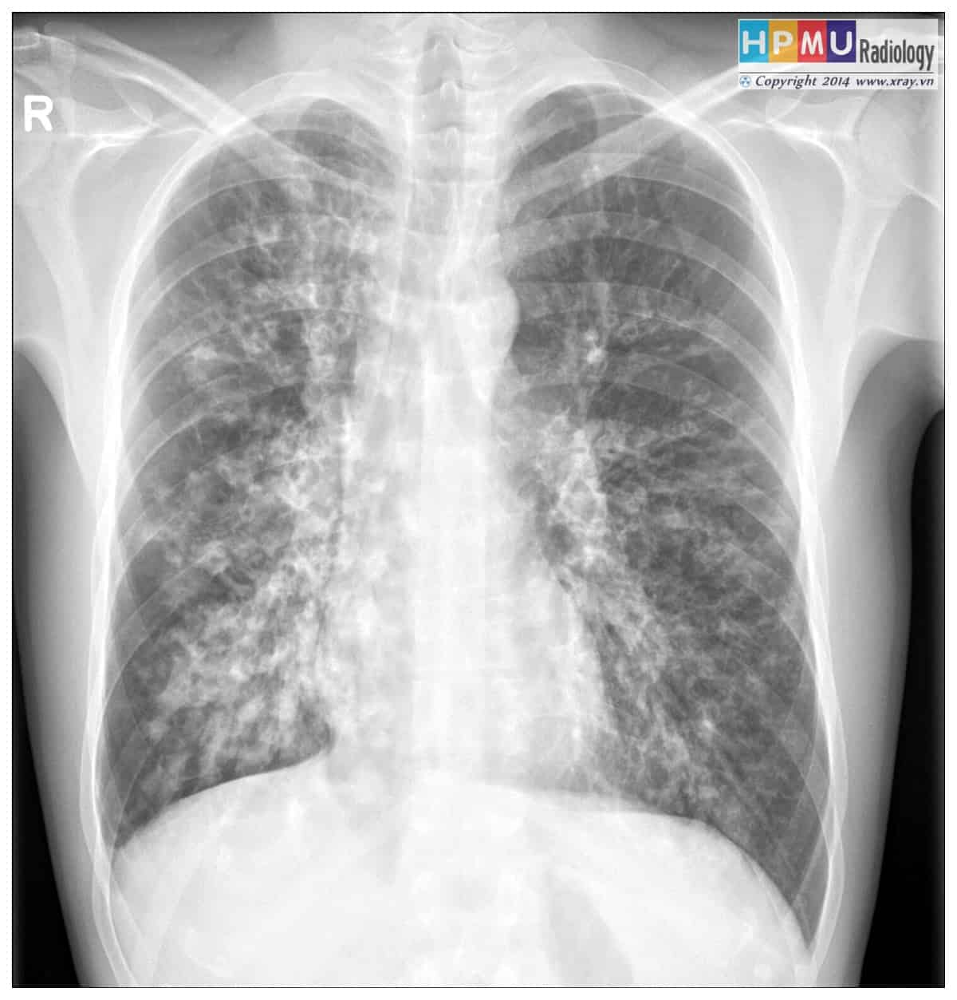
– Các dải phế quản–mạch máu ở một số phân thùy có thể đậm, dày hoặc kém rõ; đây là dấu hiệu gián tiếp, không đặc hiệu.
– Khi thể tích phổi giảm, các cấu trúc mạch máu–phế quản có thể co kéo, tụ cụm về vùng giảm thể tích; cần liên hệ với nguyên nhân như xẹp phổi hoặc xơ hóa.
– Với giãn phế quản hình ống, hướng chiếu ảnh hưởng hình thái: trục phế quản gần vuông góc với chùm tia tạo các dải song song; trục gần song song với chùm tia có thể tạo hình vòng nhẫn.
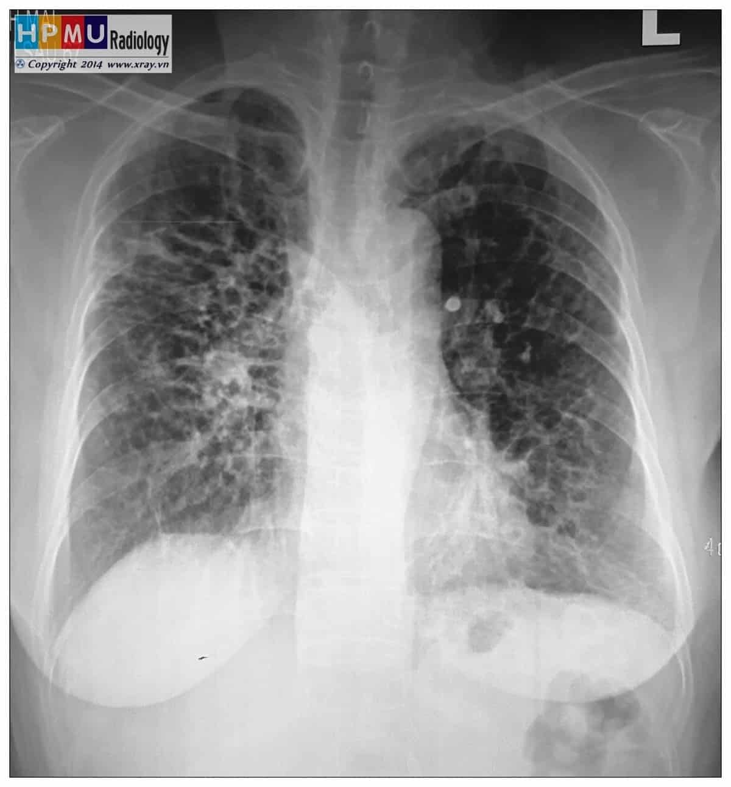
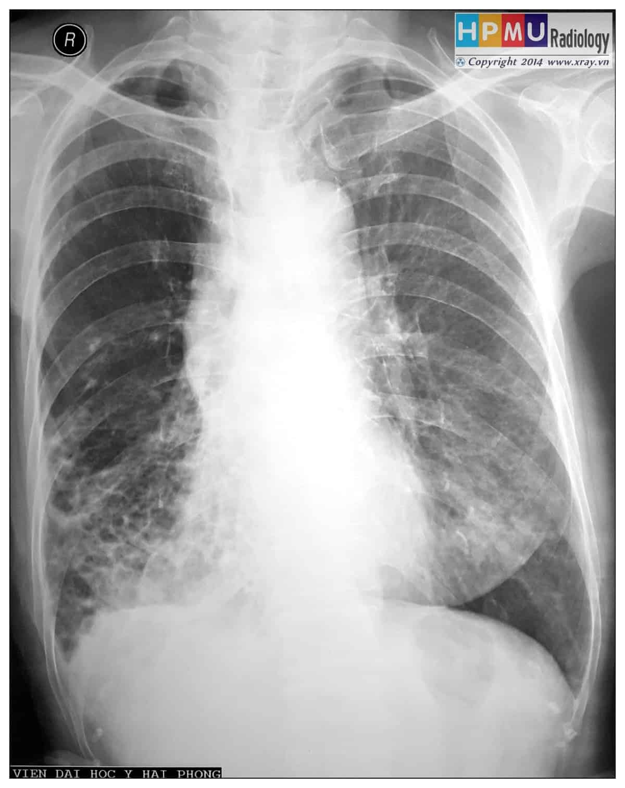
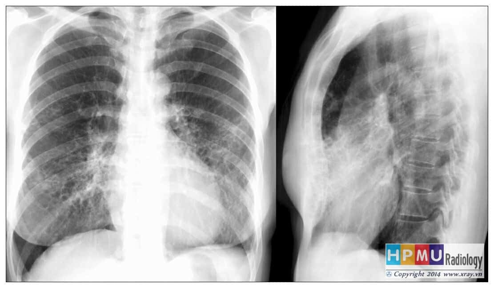
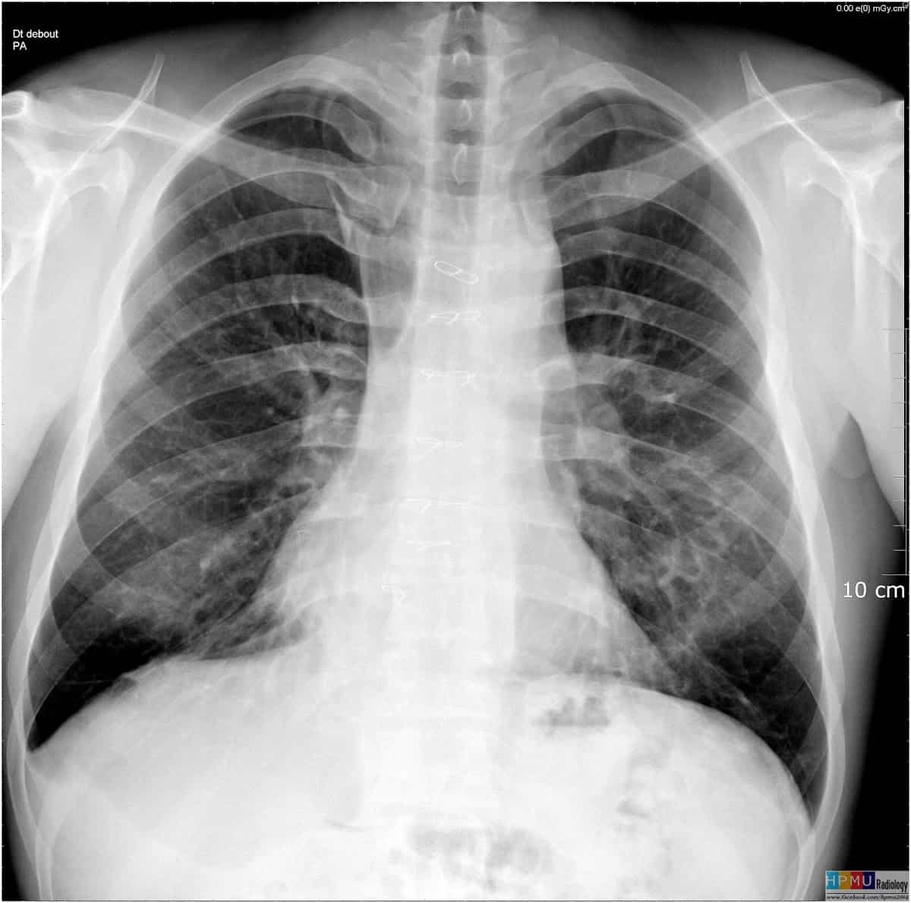
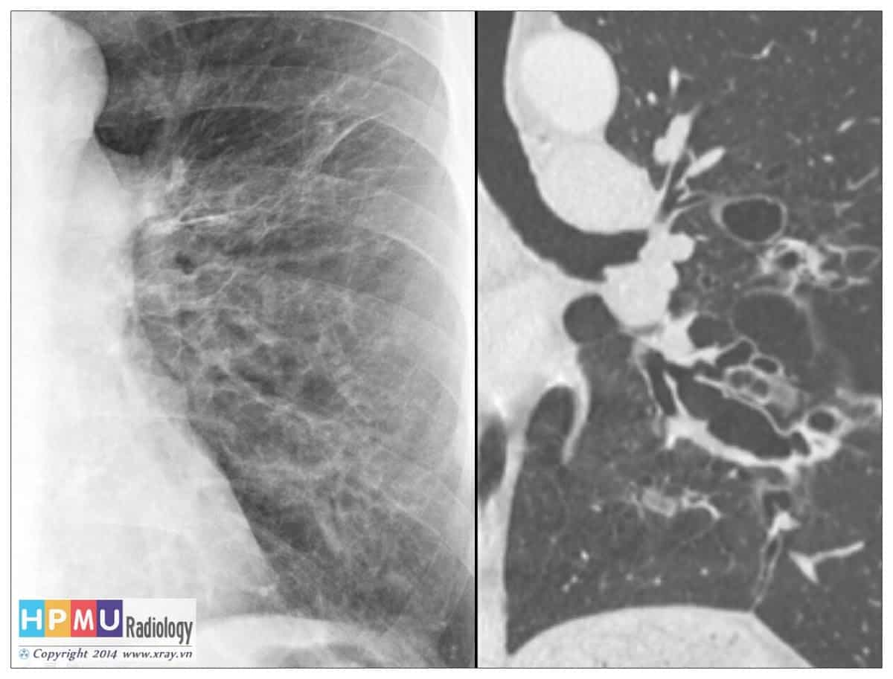
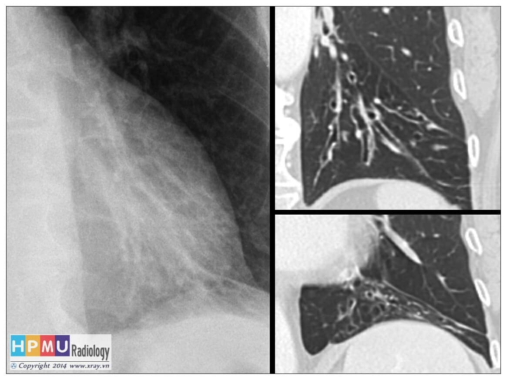
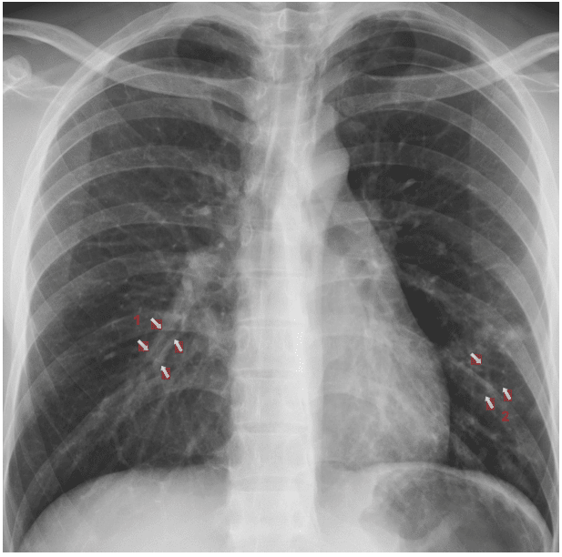
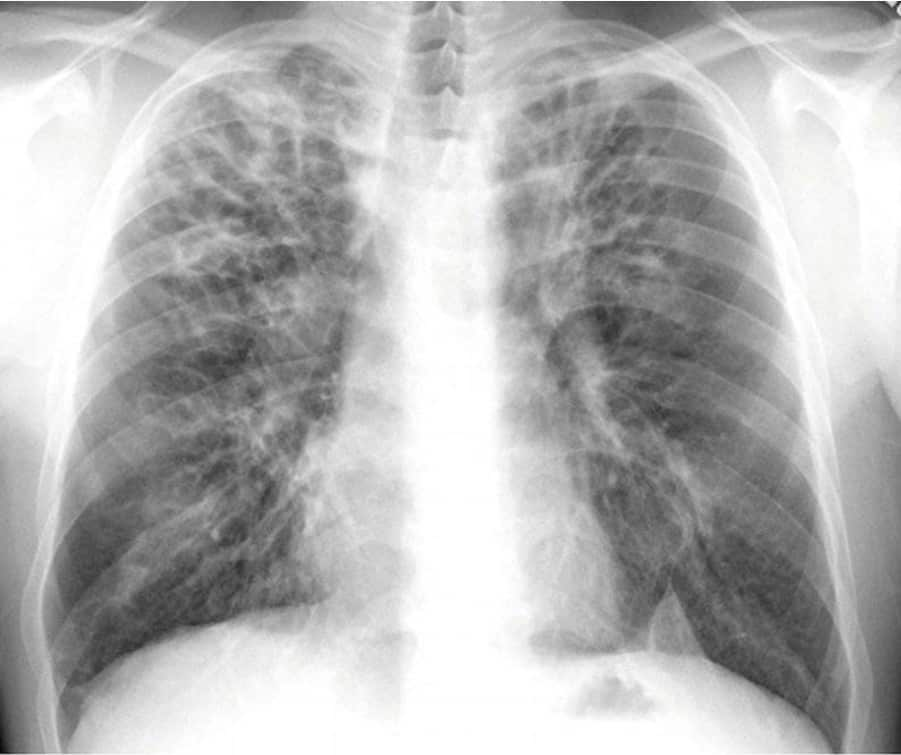
– Giãn phế quản dạng nang có thể biểu hiện các ổ sáng dạng túi do lòng phế quản giãn, tụ thành cụm dạng chùm nho.
=> Case lâm sàng 1:
=> Case lâm sàng 2:
– Giãn phế quản dạng nang lan rộng có thể tạo nhiều ổ sáng dạng nang chồng lấp, tạo hình ảnh dạng tổ ong trên X-quang; dấu hiệu không đặc hiệu và cần phân biệt với tổ ong do xơ hóa phổi kẽ.


– Các phế quản giãn dạng nang có thể chứa dịch, tạo mức khí–dịch; hình ảnh này có thể gặp khi ứ đọng dịch tiết hoặc bội nhiễm, nhưng không đặc hiệu cho nhiễm trùng.


=> Case lâm sàng 1:


– Khi các phế quản giãn bị bít bởi dịch tiết, có thể thấy các đám mờ dạng ống hoặc dải, đôi khi song song hay phân nhánh hình chữ V hoặc Y, tạo dấu ngón tay đeo găng (finger-in-glove sign); hình ảnh phản ánh nút nhầy trong lòng phế quản và không đặc hiệu cho giãn phế quản.


=> Case lâm sàng 1:


* Một số đặc điểm
– Giãn phế quản thường hai bên, hay ưu thế ở các phân thùy đáy của thùy dưới; mức độ tổn thương có thể không đồng đều giữa các thùy và giữa các phân thùy, tùy căn nguyên.
– Trong viêm phổi cấp, có thể xuất hiện giãn phế quản tạm thời có khả năng hồi phục (reversible bronchial dilatation) do viêm, ứ đọng dịch tiết hoặc xẹp phổi. Khẩu kính phế quản có thể giảm dần khi viêm phổi lui, đôi khi trong vài tháng; theo dõi hình ảnh giúp phân biệt hiện tượng này với giãn phế quản cố định..
IV. Chụp phế quản
– Chụp phế quản cản quang là kỹ thuật xâm lấn, hiện không còn sử dụng thường quy; CT ngực lát mỏng/HRCT đã thay thế trong chẩn đoán và đánh giá giãn phế quản.
– Trước đây, kỹ thuật được thực hiện khi đợt nhiễm khuẩn cấp đã được kiểm soát. Thuốc cản quang tan trong nước được ưu tiên hơn thuốc tan trong dầu để hạn chế tình trạng tồn lưu trong phế nang.
– Hình ảnh có thể cho thấy phế quản giãn dạng trụ, dạng túi hoặc phối hợp, mất hiện tượng thuôn nhỏ bình thường; các nhánh ngoại vi có thể thưa, cụt hoặc không hiện rõ trong tổn thương nặng.

V. Chẩn đoán CLVT
* Phế quản giãn
– Bình thường đường kính phế quản bằng 0.6-1 đường kính mạch máu đi kèm.


– Tỷ số đường kính trong phế quản/động mạch phổi đi kèm (B/A ratio) tăng gợi ý giãn phế quản. Ở người lớn, các ngưỡng > 1–1,5 được sử dụng trong y văn nhưng chưa thống nhất; tỷ số thay đổi theo tuổi, vị trí phổi, thể tích hít vào và đường kính động mạch. Co mạch phổi do thiếu oxy có thể làm tỷ số tăng giả.
– Mất hiện tượng thuôn nhỏ dần của lòng phế quản về ngoại vi; đường kính lòng phế quản không giảm trong đoạn ≥ 2 cm sau điểm chia nhánh.
– Phế quản hiện rõ trong phạm vi 1 cm từ màng phổi hoặc sát màng phổi, nơi các phế quản bình thường thường không còn nhìn thấy rõ.

– Các dạng giãn phế quản:
+ Dạng nang/hình túi (cystic/saccular): phế quản giãn tạo các cấu trúc dạng túi nối tiếp theo cây phế quản, có thể tụ thành cụm. Lòng phế quản có thể chứa khí hoặc dịch; dịch tiết ứ đọng có thể tạo mức khí–dịch, không nhất thiết phải có bội nhiễm. Trên CT cần nhận diện sự liên tục của các cấu trúc này với cây phế quản để phân biệt với kén khí thật hoặc tổ ong do xơ hóa phổi kẽ.


=> Case lâm sàng 1:


+ Dạng hình trụ (cylindrical): phế quản giãn tương đối đều, thành gần song song và mất thuôn nhỏ dần về ngoại vi; có thể kèm dày thành phế quản. Khi lòng phế quản bị bít bởi chất nhầy, có thể xuất hiện dấu hiệu ngón tay đeo găng (finger-in-glove sign).


+ Dạng tràng hạt (varicose bronchiectasis): đường kính phế quản thay đổi không đều, xen kẽ các đoạn giãn và hẹp, tạo bờ lồi lõm như chuỗi hạt.


– Khi ứ đọng dịch tiết hoặc bội nhiễm, nút nhầy trong các phế quản giãn có thể tạo cấu trúc tăng đậm dạng ống phân nhánh hình chữ V-Y, đôi khi có dấu hiệu ngón tay đeo găng (finger-in-glove sign).


– Bệnh lý đường thở nhỏ đi kèm có thể gây bẫy khí (air trapping) và giảm đậm độ nhu mô dạng khảm (mosaic attenuation); CT thì thở ra giúp xác nhận bẫy khí.


* Dấu hiệu hình ảnh
– Dấu hiệu đường ray (tram-track sign): phế quản giãn hình trụ, thành dày và không thuôn nhỏ dần về ngoại vi, tạo hai bờ song song khi được quan sát dọc theo trục phế quản.


– Dấu hiệu vòng nhẫn (signet-ring sign): trên lát cắt vuông góc với trục phế quản, lòng phế quản giãn tạo vòng chứa khí nằm cạnh động mạch phổi đi kèm có khẩu kính nhỏ hơn; động mạch tạo hình như viên đá trong nhẫn. Thành phế quản có thể dày nhưng không phải thành phần bắt buộc của dấu hiệu này.


– Dấu hiệu chuỗi ngọc (string-of-pearls sign): các đoạn phế quản giãn xen kẽ các đoạn hẹp dọc theo trục phế quản, tạo hình ảnh tràng hạt và tương ứng với giãn phế quản dạng tràng hạt.

– Dấu hiệu chùm nho (cluster-of-grapes sign): các phế quản giãn dạng nang hoặc hình túi tụ thành cụm, gợi ý giãn phế quản dạng nang.

* Mức độ giãn phế quản
– Phân độ giãn lòng phế quản theo tỷ số đường kính phế quản/động mạch (thành phần giãn trong thang điểm Reiff)
– Bậc 0: bình thường.
– Bậc 1: đường kính phế quản lớn hơn động mạch đi kèm nhưng nhỏ hơn 2 lần.
– Bậc 2: đường kính phế quản gấp 2–3 lần đường kính động mạch đi kèm.
– Bậc 3: đường kính phế quản lớn hơn 3 lần đường kính động mạch đi kèm.

* Dày thành phế quản
– Bậc 0: không dày thành phế quản.


=> Case lâm sàng 1:


– Bậc 1: độ dày thành phế quản < 50% đường kính động mạch phổi đi kèm.
– Bậc 2: độ dày thành phế quản từ 50% đến 100% đường kính động mạch phổi đi kèm.
– Bậc 3: độ dày thành phế quản > 100% đường kính động mạch phổi đi kèm.

– Có thể định lượng dày thành bằng tỷ số T/D (độ dày thành phế quản/đường kính ngoài toàn bộ phế quản); giá trị tham khảo ở người bình thường là < 0,2.

* Giãn ĐM phế quản
– Động mạch phế quản giãn và ngoằn ngoèo là biểu hiện thường gặp trong giãn phế quản, đồng thời là nguồn chảy máu chủ yếu gây ho ra máu. Trên CT có tiêm cản quang, đường kính động mạch phế quản > 2 mm gần nguyên ủy gợi ý giãn.


* Thang điểm BRICS
– Thang điểm BRICS (Bronchiectasis Radiologically Indexed CT Score; Bedi và cs., 2018). BRICS là thang điểm CT rút gọn, kết hợp mức độ giãn phế quản và số phân thùy phế quản–phổi có khí phế thũng; dùng hỗ trợ đánh giá mức độ bệnh cùng với các thông tin lâm sàng.
– Mức độ giãn phế quản:
+ Không giãn: 0 điểm.
+ Nhẹ: lòng phế quản chỉ lớn hơn đường kính mạch máu đi kèm: 1 điểm.
+ Vừa: lòng phế quản gấp 2–3 lần đường kính mạch máu đi kèm: 2 điểm.
+ Nặng: lòng phế quản lớn hơn 3 lần đường kính mạch máu đi kèm: 3 điểm.
– Số phân thùy phế quản–phổi có khí phế thũng:
+ Không có: 0 điểm.
+ 1–5 phân thùy: 1 điểm.
+ Trên 5 phân thùy: 2 điểm.
– Tổng điểm: 0–5; 1 điểm: nhẹ; 2–3 điểm: trung bình; 4–5 điểm: nặng.
VI. Tiên lượng & Điều trị
* Tiên lượng
– Diễn tiến giãn phế quản thay đổi giữa các bệnh nhân; một số trường hợp ổn định, số khác có đợt cấp tái diễn, suy giảm chức năng phổi và tăng nguy cơ nhập viện. Tiên lượng phụ thuộc căn nguyên, mức độ triệu chứng, chức năng phổi, tiền sử đợt cấp và tình trạng nhiễm khuẩn đường thở.
– Các yếu tố liên quan nguy cơ kết cục xấu gồm tuổi cao, BMI thấp, FEV₁ giảm, khó thở nhiều, tiền sử nhập viện hoặc đợt cấp thường xuyên, nhiễm khuẩn mạn tính (đặc biệt Pseudomonas aeruginosa) và tổn thương lan rộng.
– Thang điểm BSI (Bronchiectasis Severity Index) tổng hợp các yếu tố lâm sàng, chức năng phổi, vi sinh và hình ảnh để phân tầng nguy cơ nhập viện và tử vong:
+ 0–4 điểm: nguy cơ thấp.
+ 5–8 điểm: nguy cơ trung bình.
+ ≥ 9 điểm: nguy cơ cao.
* Điều trị
– Mục tiêu là giảm triệu chứng và đợt cấp, cải thiện chất lượng sống, hạn chế suy giảm chức năng phổi; cần tìm và điều trị căn nguyên có thể can thiệp cùng các bệnh đồng mắc.
– Làm sạch đường thở là nền tảng điều trị: hướng dẫn kỹ thuật phù hợp từng bệnh nhân, tốt nhất bởi chuyên viên vật lý trị liệu hô hấp. Khuyến khích vận động; phục hồi chức năng hô hấp khi có khó thở hoặc giảm khả năng gắng sức.
– Khi có đợt cấp, lấy bệnh phẩm đờm làm xét nghiệm vi sinh trước kháng sinh nếu khả thi; lựa chọn thuốc và đường dùng dựa trên vi sinh trước đó, kháng sinh đồ, mức độ nặng và đáp ứng. Theo hướng dẫn CHEST 2026, thời gian điều trị có thể ngắn hơn 10 ngày hoặc từ 10 ngày trở lên, tùy đáp ứng; không áp dụng một thời lượng cố định cho mọi bệnh nhân.
– Với người lớn có đợt cấp thường xuyên (CHEST 2026 định nghĩa là ≥ 2 đợt/năm), có thể cân nhắc điều trị dự phòng dài hạn:
+ Kháng sinh macrolide hoặc kháng sinh dạng hít; chọn lựa theo tình trạng nhiễm khuẩn, nguy cơ đợt cấp và đáp ứng điều trị. Trước khi dùng macrolide cần loại trừ nhiễm mycobacteria không lao; đánh giá nguy cơ tim mạch, thính lực và gan.
+ Brensocatib, thuốc ức chế dipeptidyl peptidase-1 (DPP-1), là một lựa chọn mới được CHEST 2026 đề xuất cho người bệnh có đợt cấp thường xuyên; cân nhắc tại cơ sở chuyên khoa, tùy tình trạng cấp phép và khả năng tiếp cận thuốc.
– Nếu mới phân lập P. aeruginosa, ERS 2025 gợi ý cân nhắc điều trị tiệt trừ; đây là khuyến cáo có điều kiện với bằng chứng hạn chế. CHEST 2026 không đưa ra khuyến cáo riêng về tình huống này, nên quyết định cần cá thể hóa.
– Có thể cân nhắc thuốc điều hòa/chất nhầy khi triệu chứng chưa kiểm soát dù đã làm sạch đường thở; không dùng DNase tái tổ hợp thường quy. Không dùng corticosteroid dạng hít thường quy cho giãn phế quản đơn thuần, trừ khi có chỉ định khác như hen hoặc COPD; không dùng kháng sinh uống dài hạn không phải macrolide như lựa chọn đầu tay thường quy.
– Khi ho ra máu, CHEST 2026 gợi ý có thể cân nhắc tranexamic acid ở trường hợp phù hợp; thuốc này không thay thế đánh giá và xử trí cấp cứu khi ho ra máu nặng.
Tài liệu tham khảo
* Bronchiectasis – Luce Cantin, Alexander A. Bankier and Ronald L. Eisenberg
* Bronchiectasis: Mechanisms and Imaging Clues of Associated Common and Uncommon Diseases – Bethany Milliron, MD Travis S. Henry, MD
* Lung – HRCT Basic Interpretation – Robin Smithuis, Otto van Delden and Cornelia Schaefer-Prokop
* Differential Diagnosis of Bronchiectasis – P. R. P. Santana, J. W. M. Trindade Jr, B. B. Libânio
* Bronchiectasis: Imaging features and related diseases – M. Armas Goncalves, C. Ruivo, B. Gonçalves
* Bronchiectasis: Narrowing differential diagnosis of common and uncommon etiologies – V. C. Cárdenas
* Large Airway Diseases and the MDCT: always holding hands – M. Lozano Ros, M. L. Rodriguez Rodriguez, A. Sánchez González
* Diagnostic imaging in adult non-cystic fibrosis bronchiectasis – Gunnar Juliusson
* Bronchiectasis: correlation of high-resolution CT findings with health-related quality of life – I Eshed
* Bronchiectasis Revisited: Imaging-Based Pattern Approach to Diagnosis – Anuradha Singh
* Imaging of bronchiectasis – John Bonavita
* Bronchiectasis imaging – G Chassagnon
* Radiology of Bronchiectasis – Ashkan Pakzad
* Beyond bronchitis: a review of the congenital and acquired abnormalities of the bronchus – Thomas Marini
* Grainger & Allison’s Diagnostic Radiology – Andreas Adam
* Bronchiectasis – Luce Cantin, Alexander A. Bankier